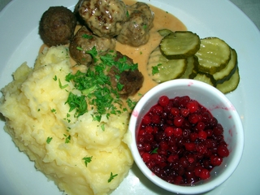

Matbok
Meatballs!
Ingredients
- 250 g ground beef
- 250 g ground pork
- 1 egg
- 50 mL dried bread crumbs
- 200 - 300 mL milk or cream
- 1 small onion
- salt, pepper
- butter for frying
How to make Meatballs!
- Combine the liquid ingredients and the bread crumbs in a bowl and let it sit for 7-8 minutes.
- Finely chop or grate the onion.
- Combine the ground beef, ground pork, egg, chopped onion, salt and pepper in the bowl.
- Make round Meatballs!, approximately 2-3 centimeters in diameter.
- Pan fry the Meatballs! on medium heat in a frying pan with butter for approximately 3-5 minutes. Fry them on all sides until they are brown and not pink in the middle. Shaking the pan occasionally will help the Meatballs! cook evenly.
Nutrition values
Calories: 487 kcal (24% of RDI)
Fat: 37.4 gram (57.5% of RDI)
Cholesterol: 194 mg (64.8% of RDI)
Sodium: 132 mg (5.5% of RDI)
Iron: 2.61 mg (14.5% of RDI)
Calcium: 75 mg (7.5% of RDI)
Serving details
Servings: 4
Time consumption: 30 minutes
Recipe is borrowed from Swedish Meatballs on Wikibooks.
 Roald Dahl
2014-09-04 11:22
Roald Dahl
2014-09-04 11:22
It's "different".
This tastes superweird. Would not recommend to anyone willing to keep their sanity